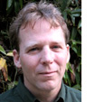

|
|
|
It's been a busy summer at Carpe Diem. Last week we had a great leadership meeting in Salt Lake. Check out
www.exloco.org/Headwaters_SLC to see who
was there, what we talked about and more. At that meeting, I was delighted to be able to introduce Matt Clifford, our new
Carpe Diem Policy Director. Matt is a western water attorney who comes to us by way of the Clark Fork Coalition in Montana.
An Arizona native, Matt is an avid fly fisherman who serves on the national board of Trout Unlimited. Carpe Diem Network,
please meet Matt Clifford; Matt — the Network!

Kimery Wiltshire
Director, Carpe Diem Project
|
|
AN INTERVIEW WITH MATT CLIFFORD
Learning to Move Things Forward
|

“If people really come together, there tends to be a way. That really happens.”
|
Q: Can you tell us a bit about your background and how you got involved in water issues?
MC: I grew up in Phoenix in a family where my father was a water rights attorney for the state of
Arizona. He represented the fun stuff — Game and Fish, the Parks Department. He would take me with him on these
field trips, usually to look at
|
|
some dam in a remote corner of the state. We'd
usually work in some fishing or hunting, and he would talk about what was behind his work, things like how the Salt
River used to have water in it. It made me aware at an early age about how important water was.
After college, I realized Arizona was never going to have enough trout for me, so I went to work up in Yellowstone,
which is the fishing capital of America, if not the planet. After a couple of years I had state residence in
Montana, so I went to law school in Missoula. I knew I wanted to work on water issues, and I had seen enough to know
there were different water interests — some doing good things, others not so much — and I wanted to work
for the good guys. Read more.
|
|
|